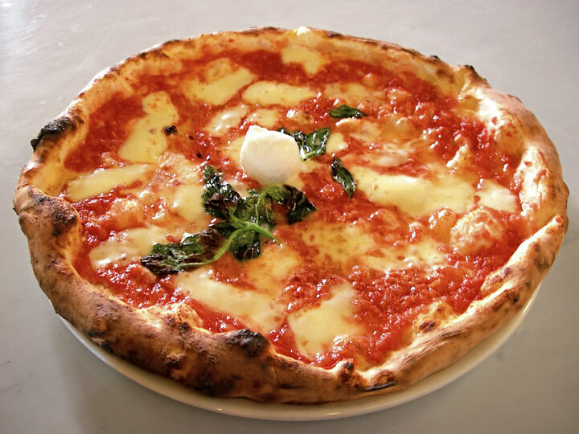
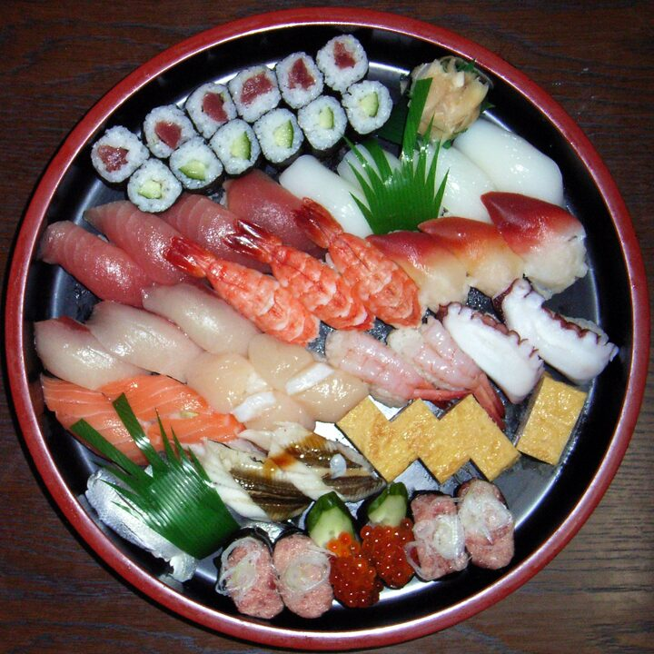
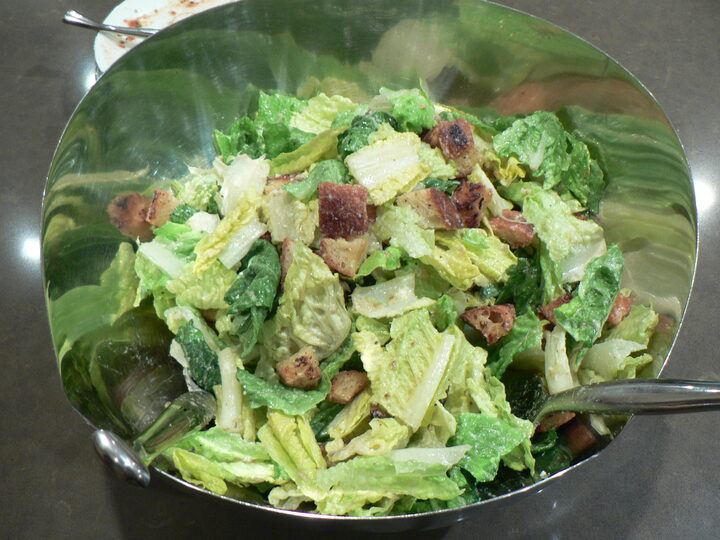

image-classification · vision · WASM · ~93 MB
A Swin Transformer fine-tuned on the Food-101 dataset. Give it a plate — a slice of
pizza, a bowl of ramen, a wedge of tiramisu — and it reads
the fine-grained texture (crumb, char, garnish) to pick one of 101 dishes, with a probability for
each. It runs entirely on your device: the photo never leaves the tab.
| Model | onnx-community/swin-finetuned-food101-ONNX |
|---|---|
| Task / pipeline | image-classification |
| Architecture | Swin Transformer (base) — hierarchical shifted-window attention, fine-tuned on Food-101 |
| Labels | Food-101 — 101 fixed dish classes (apple pie → waffles) |
| Quantization | q8 (8-bit) ONNX — model_quantized.onnx |
| Backend | WebAssembly (runs anywhere; no WebGPU needed) |
| Download | ~93 MB, cached after first load |
| License | Apache-2.0 |
| Web APIs | WebAssembly, Web Workers, FileReader — all Baseline widely available |
Pick or drop a food photo and hit Identify. The bars are the softmax over Food-101's 101 dishes — only the top few are shown, but they're drawn from the full distribution.



5 dishes
The model's final layer produces one raw score — a logit — for each of the 101 dishes. A softmax turns those logits into probabilities that sum to 100%. The table shows the top dishes with their raw logit next to the softmax probability. Below it, two numbers describe the shape of the whole distribution: the top-1 margin (how far the winner leads the runner-up) and the normalised entropy (0 = the model is certain, 1 = it's spread thin across many dishes). A clear plate of sushi is peaky and low-entropy; a fusion dish or a messy crop is flat and high-entropy — and the runners-up are usually its visual neighbours (a steak next to prime rib, a cupcake next to a red-velvet slice).
| Dish | logit | softmax |
|---|
Confidence (low ← → high):
A fast, private, offline "what dish is this?" is a building block for food apps, restaurant tools, and health trackers — and it's a good example of a specialised classifier: it only knows 101 dishes, but within that world it's far sharper than a generic 1,000-class ImageNet model, because every one of its classes is a food.
ramen or caesar_salad and look up a calorie/macro estimate client-side, before anything is uploaded.Drop a plate, read the top dishes and confidence — feel food classification first-hand.
A menu & nutrition tagger: classify a meal and attach an estimated calorie/macro card.
Ambiguous & plated dishes: crop, zoom, and occlude, and watch the model argue with itself.
Classify → describe: chain the dish label into a full-sentence caption of the plate.
The convenience path is two lines with Transformers.js:
import { pipeline } from "@huggingface/transformers";
const classify = await pipeline(
"image-classification",
"onnx-community/swin-finetuned-food101-ONNX",
{ dtype: "q8" },
); // downloads + caches ~93 MB once
const output = await classify(imageURL, { top_k: 5 });
// → [{ label: "pizza", score: 0.998 }, { label: "lasagna", score: 0.0006 }, …]
This page goes one level deeper for "See inside": instead of the pipeline it runs the model's own
processor then model() in a single forward pass, so it can read the raw
logits tensor (all 101 dishes) and compute the softmax, entropy, and margin itself.
Same weights, same result — just keeping the intermediate numbers. Inference runs in a Web Worker
so the page never janks. Labels come back snake_cased (baby_back_ribs); the page
pretty-prints them.